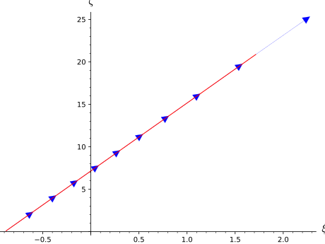
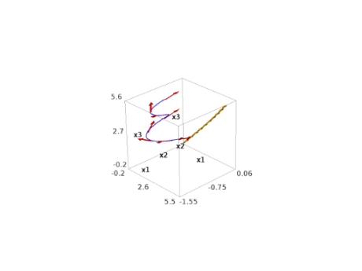
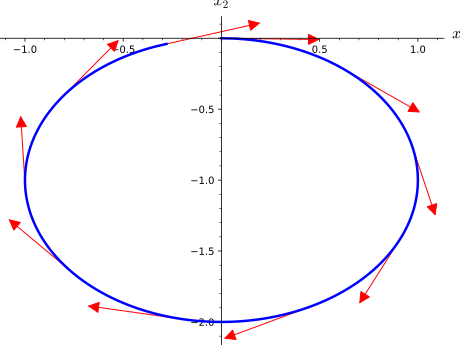

Integrated Curves and Geodesics in Manifolds¶
Given a differentiable manifold \(M\), an integrated curve in \(M\) is a differentiable curve constructed as a solution to a system of second order differential equations.
Integrated curves are implemented by the class IntegratedCurve, from
which the classes IntegratedAutoparallelCurve and
IntegratedGeodesic inherit.
Example: a geodesic in the hyperbolic plane
First declare the hyperbolic plane as a 2-dimensional Riemannian manifold M
and introduce the chart X corresponding to the Poincaré half-plane model:
sage: M = Manifold(2, 'M', structure='Riemannian')
sage: X.<x,y> = M.chart('x y:(0,+oo)')
Then set the metric to be the hyperbolic one:
sage: g = M.metric()
sage: g[0,0], g[1,1] = 1/y^2, 1/y^2
sage: g.display()
g = y^(-2) dx*dx + y^(-2) dy*dy
Pick an initial point and an initial tangent vector:
sage: p = M((0,1), name='p')
sage: v = M.tangent_space(p)((1,3/2), name='v')
sage: v.display()
v = d/dx + 3/2 d/dy
Declare a geodesic with such initial conditions, denoting by \(t\) the corresponding affine parameter:
sage: t = var('t')
sage: c = M.integrated_geodesic(g, (t, 0, 10), v, name='c')
Numerically integrate the geodesic (see solve() for
all possible options, including the choice of the numerical algorithm):
sage: sol = c.solve()
Plot the geodesic after interpolating the solution sol:
sage: interp = c.interpolate()
sage: graph = c.plot_integrated()
sage: p_plot = p.plot(size=30, label_offset=-0.07, fontsize=20)
sage: v_plot = v.plot(label_offset=0.05, fontsize=20)
sage: graph + p_plot + v_plot
Graphics object consisting of 5 graphics primitives
\(c\) is a differentiable curve in \(M\) and inherits from the properties of
DifferentiableCurve:
sage: c.domain()
Real interval (0, 10)
sage: c.codomain()
2-dimensional Riemannian manifold M
sage: c.display()
c: (0, 10) --> M
In particular, its value at \(t=1\) is:
sage: c(1)
Point on the 2-dimensional Riemannian manifold M
which corresponds to the following \((x, y)\) coordinates:
sage: X(c(1)) # abs tol 1e-12
(2.4784140715580136, 1.5141683866138937)
AUTHORS:
- Karim Van Aelst (2017): initial version
- Florentin Jaffredo (2018): integration over multiple charts, use of
fast_callableto improve the computation speed
-
class
sage.manifolds.differentiable.integrated_curve.IntegratedAutoparallelCurve(parent, affine_connection, curve_parameter, initial_tangent_vector, chart=None, name=None, latex_name=None, verbose=False, across_charts=False)¶ Bases:
sage.manifolds.differentiable.integrated_curve.IntegratedCurveAutoparallel curve on the manifold with respect to a given affine connection.
INPUT:
parent–IntegratedAutoparallelCurveSetthe set of curves \(\mathrm{Hom_{autoparallel}}(I, M)\) to which the curve belongsaffine_connection–AffineConnectionaffine connection with respect to which the curve is autoparallelcurve_parameter– symbolic expression to be used as the parameter of the curve (the equations defining an instance of IntegratedAutoparallelCurve are such thattwill actually be an affine parameter of the curve)initial_tangent_vector–TangentVectorinitial tangent vector of the curvechart– (default:None) chart on the manifold in terms of which the equations are expressed; ifNonethe default chart of the manifold is assumedname– (default:None) string; symbol given to the curvelatex_name– (default:None) string; LaTeX symbol to denote the curve; if none is provided,namewill be used
EXAMPLES:
Autoparallel curves associated with the Mercator projection of the unit 2-sphere \(\mathbb{S}^{2}\).
See also
https://idontgetoutmuch.wordpress.com/2016/11/24/mercator-a-connection-with-torsion/ for more details about Mercator projection.
On the Mercator projection, the lines of longitude all appear vertical and then all parallel with respect to each other. Likewise, all the lines of latitude appear horizontal and parallel with respect to each other. These curves may be recovered as autoparallel curves of a certain connection \(\nabla\) to be made explicit.
Start with declaring the standard polar coordinates \((\theta, \phi)\) on \(\mathbb{S}^{2}\) and the corresponding coordinate frame \((e_{\theta}, e_{\phi})\):
sage: S2 = Manifold(2, 'S^2', start_index=1) sage: polar.<th,ph>=S2.chart() sage: epolar = polar.frame()
Normalizing \(e_{\phi}\) provides an orthonormal basis:
sage: ch_basis = S2.automorphism_field() sage: ch_basis[1,1], ch_basis[2,2] = 1, 1/sin(th) sage: epolar_ON = epolar.new_frame(ch_basis,'epolar_ON')
Denote \((\hat{e}_{\theta}, \hat{e}_{\phi})\) such an orthonormal frame field. In any point, the vector field \(\hat{e}_{\theta}\) is normalized and tangent to the line of longitude through the point. Likewise, \(\hat{e}_{\phi}\) is normalized and tangent to the line of latitude.
Now, set an affine connection with respect to such fields that are parallely transported in all directions, that is: \(\nabla \hat{e}_{\theta} = \nabla \hat{e}_{\phi} = 0\). This is equivalent to setting all the connection coefficients to zero with respect to this frame:
sage: nab = S2.affine_connection('nab') sage: nab.set_coef(frame=epolar_ON)[:] [[[0, 0], [0, 0]], [[0, 0], [0, 0]]]
This connection is such that two vectors are parallel if their angles to a given meridian are the same. Check that this connection is compatible with the Euclidean metric tensor \(g\) induced on \(\mathbb{S}^{2}\):
sage: g = S2.metric('g') sage: g[1,1], g[2,2] = 1, (sin(th))^2 sage: nab(g)[:] [[[0, 0], [0, 0]], [[0, 0], [0, 0]]]
Yet, this connection is not the Levi-Civita connection, which implies that it has non-vanishing torsion:
sage: nab.torsion()[:] [[[0, 0], [0, 0]], [[0, cos(th)/sin(th)], [-cos(th)/sin(th), 0]]]
Set generic initial conditions for the autoparallel curves to compute:
sage: [th0, ph0, v_th0, v_ph0] = var('th0 ph0 v_th0 v_ph0') sage: p = S2.point((th0, ph0), name='p') sage: Tp = S2.tangent_space(p) sage: v = Tp((v_th0, v_ph0), basis=epolar_ON.at(p))
Note here that the components
(v_th0, v_ph0)of the initial tangent vectorvrefer to the basisepolar_ON\(= (\hat{e}_{\theta}, \hat{e}_{\phi})\) and not the coordinate basisepolar\(= (e_{\theta}, e_{\phi})\). This is merely to help picture the aspect of the tangent vector in the usual embedding of \(\mathbb{S}^{2}\) in \(\mathbb{R}^{3}\) thanks to using an orthonormal frame, since providing the components with respect to the coordinate basis would require multiplying the second component (i.e. the \(\phi\) component) in order to picture the vector in the same way. This subtlety will need to be taken into account later when the numerical curve will be compared to the analytical solution.Now, declare the corresponding integrated autoparallel curve and display the differential system it satisfies:
sage: [t, tmin, tmax] = var('t tmin tmax') sage: c = S2.integrated_autoparallel_curve(nab, (t, tmin, tmax), ....: v, chart=polar, name='c') sage: sys = c.system(verbose=True) Autoparallel curve c in the 2-dimensional differentiable manifold S^2 equipped with Affine connection nab on the 2-dimensional differentiable manifold S^2, and integrated over the Real interval (tmin, tmax) as a solution to the following equations, written with respect to Chart (S^2, (th, ph)): Initial point: Point p on the 2-dimensional differentiable manifold S^2 with coordinates [th0, ph0] with respect to Chart (S^2, (th, ph)) Initial tangent vector: Tangent vector at Point p on the 2-dimensional differentiable manifold S^2 with components [v_th0, v_ph0/sin(th0)] with respect to Chart (S^2, (th, ph)) d(th)/dt = Dth d(ph)/dt = Dph d(Dth)/dt = 0 d(Dph)/dt = -Dph*Dth*cos(th)/sin(th)
Set a dictionary providing the parameter range and the initial conditions for a line of latitude and a line of longitude:
sage: dict_params={'latit':{tmin:0,tmax:3,th0:pi/4,ph0:0.1,v_th0:0,v_ph0:1}, ....: 'longi':{tmin:0,tmax:3,th0:0.1,ph0:0.1,v_th0:1,v_ph0:0}}
Declare the Mercator coordinates \((\xi, \zeta)\) and the corresponding coordinate change from the polar coordinates:
sage: mercator.<xi,ze> = S2.chart(r'xi:(-oo,oo):\xi ze:(0,2*pi):\zeta') sage: polar.transition_map(mercator, (log(tan(th/2)), ph)) Change of coordinates from Chart (S^2, (th, ph)) to Chart (S^2, (xi, ze))
Ask for the identity map in terms of these charts in order to add this coordinate change to its dictionary of expressions. This is required to plot the curve with respect to the Mercator chart:
sage: identity = S2.identity_map() sage: identity.coord_functions(polar, mercator) Coordinate functions (log(sin(1/2*th)/cos(1/2*th)), ph) on the Chart (S^2, (th, ph))
Solve, interpolate and prepare the plot for the solutions corresponding to the two initial conditions previously set:
sage: graph2D_mercator = Graphics() sage: for key in dict_params: ....: sol = c.solve(solution_key='sol-'+key, ....: parameters_values=dict_params[key]) ....: interp = c.interpolate(solution_key='sol-'+key, ....: interpolation_key='interp-'+key) ....: graph2D_mercator+=c.plot_integrated(interpolation_key='interp-'+key, ....: chart=mercator, thickness=2)
Prepare a grid of Mercator coordinates lines, and plot the curves over it:
sage: graph2D_mercator_coords=mercator.plot(chart=mercator, ....: number_values=8,color='yellow') sage: graph2D_mercator + graph2D_mercator_coords Graphics object consisting of 18 graphics primitives
The resulting curves are horizontal and vertical as expected. It is easier to check that these are latitude and longitude lines respectively when plotting them on \(\mathbb{S}^{2}\). To do so, use \(\mathbb{R}^{3}\) as the codomain of the standard map embedding \((\mathbb{S}^{2}, (\theta, \phi))\) in the 3-dimensional Euclidean space:
sage: R3 = Manifold(3, 'R3', start_index=1) sage: cart.<X,Y,Z> = R3.chart() sage: euclid_embedding = S2.diff_map(R3, ....: {(polar, cart):[sin(th)*cos(ph),sin(th)*sin(ph),cos(th)]})
Plot the resulting curves on the grid of polar coordinates lines on \(\mathbb{S}^{2}\):
sage: graph3D_embedded_curves = Graphics() sage: for key in dict_params: ....: graph3D_embedded_curves += c.plot_integrated(interpolation_key='interp-'+key, ....: mapping=euclid_embedding, thickness=5, ....: display_tangent=True, scale=0.4, width_tangent=0.5) sage: graph3D_embedded_polar_coords = polar.plot(chart=cart, ....: mapping=euclid_embedding, ....: number_values=15, color='yellow') sage: graph3D_embedded_curves + graph3D_embedded_polar_coords Graphics3d Object
Finally, one may plot a general autoparallel curve with respect to \(\nabla\) that is neither a line of latitude or longitude. The vectors tangent to such a curve make an angle different from 0 or \(\pi/2\) with the lines of latitude and longitude. Then, compute a curve such that both components of its initial tangent vectors are non zero:
sage: sol = c.solve(solution_key='sol-angle', ....: parameters_values={tmin:0,tmax:2,th0:pi/4,ph0:0.1,v_th0:1,v_ph0:8}) sage: interp = c.interpolate(solution_key='sol-angle', ....: interpolation_key='interp-angle')
Plot the resulting curve in the Mercator plane. This generates a straight line, as expected:
sage: c.plot_integrated(interpolation_key='interp-angle', ....: chart=mercator, thickness=1, display_tangent=True, ....: scale=0.2, width_tangent=0.2) Graphics object consisting of 11 graphics primitives
One may eventually plot such a curve on \(\mathbb{S}^{2}\):
sage: graph3D_embedded_angle_curve=c.plot_integrated(interpolation_key='interp-angle', ....: mapping=euclid_embedding, thickness=5, ....: display_tangent=True, scale=0.1, width_tangent=0.5) sage: graph3D_embedded_angle_curve + graph3D_embedded_polar_coords Graphics3d Object
All the curves presented are loxodromes, and the differential system defining them (displayed above) may be solved analytically, providing the following expressions:
\[\begin{split}\begin{aligned} \theta(t) &= \theta_{0} + \dot{\theta}_{0} (t - t_{0}), \\ \phi(t) &= \phi_{0} - \frac{1}{\tan \alpha} \left( \ln \tan \frac{\theta_{0} + \dot{\theta}_{0} (t - t_{0})}{2} - \ln \tan \frac{\theta_{0}}{2} \right), \end{aligned}\end{split}\]where \(\alpha\) is the angle between the curve and any latitude line it crosses; then, one finds \(\tan \alpha = - \dot{\theta}_{0} / (\dot{\phi}_{0} \sin \theta_{0})\) (then \(\tan \alpha \leq 0\) when the initial tangent vector points towards the southeast).
In order to use these expressions to compare with the result provided by the numerical integration, remember that the components
(v_th0, v_ph0)of the initial tangent vectorvrefer to the basisepolar_ON\(= (\hat{e}_{\theta}, \hat{e}_{\phi})\) and not the coordinate basisepolar\(= (e_{\theta}, e_{\phi})\). Therefore, the following relations hold:v_ph0\(= \dot{\phi}_{0} \sin \theta_{0}\) (and not merely \(\dot{\phi}_{0}\)), whilev_th0clearly is \(\dot{\theta}_{0}\).With this in mind, plot an analytical curve to compare with a numerical solution:
sage: graph2D_mercator_angle_curve=c.plot_integrated(interpolation_key='interp-angle', ....: chart=mercator, thickness=1) sage: expr_ph = ph0+v_ph0/v_th0*(ln(tan((v_th0*t+th0)/2))-ln(tan(th0/2))) sage: c_loxo = S2.curve({polar:[th0+v_th0*t, expr_ph]}, (t,0,2), ....: name='c_loxo')
Ask for the expression of the loxodrome in terms of the Mercator chart in order to add it to its dictionary of expressions. It is a particularly long expression, and there is no particular need to display it, which is why it may simply be affected to an arbitrary variable
expr_mercator, which will never be used again. But adding the expression to the dictionary is required to plot the curve with respect to the Mercator chart:sage: expr_mercator = c_loxo.expression(chart2=mercator)
Plot the curves (for clarity, set a 2 degrees shift in the initial value of \(\theta_{0}\) so that the curves do not overlap):
sage: graph2D_mercator_loxo = c_loxo.plot(chart=mercator, ....: parameters={th0:pi/4+2*pi/180, ph0:0.1, v_th0:1, v_ph0:8}, ....: thickness=1, color='blue') sage: graph2D_mercator_angle_curve + graph2D_mercator_loxo Graphics object consisting of 2 graphics primitives
Both curves do have the same aspect. One may eventually compare these curves on \(\mathbb{S}^{2}\):
sage: graph3D_embedded_angle_curve=c.plot_integrated(interpolation_key='interp-angle', ....: mapping=euclid_embedding, thickness=3) sage: graph3D_embedded_loxo = c_loxo.plot(mapping=euclid_embedding, ....: parameters={th0:pi/4+2*pi/180, ph0:0.1, v_th0:1, v_ph0:8}, ....: thickness=3, color = 'blue') sage: (graph3D_embedded_angle_curve + graph3D_embedded_loxo ....: + graph3D_embedded_polar_coords) Graphics3d Object
-
system(verbose=False)¶ Provide a detailed description of the system defining the autoparallel curve and returns the system defining it: chart, equations and initial conditions.
INPUT:
verbose– (default:False) prints a detailed description of the curve
OUTPUT:
- list containing the
- the equations
- the initial conditions
- the chart
EXAMPLES:
System defining an autoparallel curve:
sage: M = Manifold(3, 'M') sage: X.<x1,x2,x3> = M.chart() sage: [t, A, B] = var('t A B') sage: nab = M.affine_connection('nabla', r'\nabla') sage: nab[X.frame(),0,0,1],nab[X.frame(),2,1,2]=A*x1^2,B*x2*x3 sage: p = M.point((0,0,0), name='p') sage: Tp = M.tangent_space(p) sage: v = Tp((1,0,1)) sage: c = M.integrated_autoparallel_curve(nab, (t, 0, 5), v) sage: sys = c.system(verbose=True) Autoparallel curve in the 3-dimensional differentiable manifold M equipped with Affine connection nabla on the 3-dimensional differentiable manifold M, and integrated over the Real interval (0, 5) as a solution to the following equations, written with respect to Chart (M, (x1, x2, x3)): Initial point: Point p on the 3-dimensional differentiable manifold M with coordinates [0, 0, 0] with respect to Chart (M, (x1, x2, x3)) Initial tangent vector: Tangent vector at Point p on the 3-dimensional differentiable manifold M with components [1, 0, 1] with respect to Chart (M, (x1, x2, x3)) d(x1)/dt = Dx1 d(x2)/dt = Dx2 d(x3)/dt = Dx3 d(Dx1)/dt = -A*Dx1*Dx2*x1^2 d(Dx2)/dt = 0 d(Dx3)/dt = -B*Dx2*Dx3*x2*x3 sage: sys_bis = c.system() sage: sys_bis == sys True
-
class
sage.manifolds.differentiable.integrated_curve.IntegratedCurve(parent, equations_rhs, velocities, curve_parameter, initial_tangent_vector, chart=None, name=None, latex_name=None, verbose=False, across_charts=False)¶ Bases:
sage.manifolds.differentiable.curve.DifferentiableCurveGiven a chart with coordinates denoted \((x_{1}, \ldots, x_{n})\), an instance of
IntegratedCurveis a curve \(t \mapsto (x_{1}(t), \ldots, x_{n}(t))\) constructed as a solution to a system of second order differential equations satisfied by the coordinate curves \(t \mapsto x_{i}(t)\).INPUT:
parent–IntegratedCurveSetthe set of curves \(\mathrm{Hom_{integrated}}(I, M)\) to which the curve belongsequations_rhs– list of the right-hand sides of the equations on the velocities only (the term velocity referring to the derivatives \(d x_{i} / dt\) of the coordinate curves)velocities– list of the symbolic expressions used inequations_rhsto denote the velocitiescurve_parameter– symbolic expression used inequations_rhsto denote the parameter of the curve (denoted \(t\) in the descriptions above)initial_tangent_vector–TangentVectorinitial tangent vector of the curvechart– (default:None) chart on the manifold in which the equations are given; ifNonethe default chart of the manifold is assumedname– (default:None) string; symbol given to the curvelatex_name– (default:None) string; LaTeX symbol to denote the curve; if none is provided,namewill be used
EXAMPLES:
Motion of a charged particle in an axial magnetic field linearly increasing in time and exponentially decreasing in space:
\[\mathbf{B}(t,\mathbf{x}) = \frac{B_{0}t}{T} \exp \left( -\frac{ x_{1}^{2} + x_{2}^{2} }{ L^{2} } \right) \mathbf{e_{3}}.\]Equations of motion are:
\[\begin{split}\begin{aligned} \ddot{x}_{1}(t) &= \frac{qB(t,\mathbf{x}(t))}{m} \dot{x}_{2}(t), \\ \ddot{x}_{2}(t) &= -\frac{qB(t, \mathbf{x}(t))}{m} \dot{x}_{1}(t), \\ \ddot{x}_{3}(t) &= 0. \end{aligned}\end{split}\]Start with declaring a chart on a 3-dimensional manifold and the symbolic expressions denoting the velocities and the various parameters:
sage: M = Manifold(3, 'M', start_index=1) sage: X.<x1,x2,x3> = M.chart() sage: var('t B_0 m q L T') (t, B_0, m, q, L, T) sage: B = B_0*t/T*exp(-(x1^2 + x2^2)/L^2) sage: D = X.symbolic_velocities(); D [Dx1, Dx2, Dx3] sage: eqns = [q*B/m*D[1], -q*B/m*D[0], 0]
Set the initial conditions:
sage: p = M.point((0,0,0), name='p') sage: Tp = M.tangent_space(p) sage: v = Tp((1,0,1))
Declare an integrated curve and display information relative to it:
sage: c = M.integrated_curve(eqns, D, (t, 0, 5), v, name='c', ....: verbose=True) The curve was correctly set. Parameters appearing in the differential system defining the curve are [B_0, L, T, m, q]. sage: c Integrated curve c in the 3-dimensional differentiable manifold M sage: sys = c.system(verbose=True) Curve c in the 3-dimensional differentiable manifold M integrated over the Real interval (0, 5) as a solution to the following system, written with respect to Chart (M, (x1, x2, x3)): Initial point: Point p on the 3-dimensional differentiable manifold M with coordinates [0, 0, 0] with respect to Chart (M, (x1, x2, x3)) Initial tangent vector: Tangent vector at Point p on the 3-dimensional differentiable manifold M with components [1, 0, 1] with respect to Chart (M, (x1, x2, x3)) d(x1)/dt = Dx1 d(x2)/dt = Dx2 d(x3)/dt = Dx3 d(Dx1)/dt = B_0*Dx2*q*t*e^(-(x1^2 + x2^2)/L^2)/(T*m) d(Dx2)/dt = -B_0*Dx1*q*t*e^(-(x1^2 + x2^2)/L^2)/(T*m) d(Dx3)/dt = 0
Generate a solution of the system and an interpolation of this solution:
sage: sol = c.solve(step=0.2, ....: parameters_values={B_0:1, m:1, q:1, L:10, T:1}, ....: solution_key='carac time 1', verbose=True) Performing numerical integration with method 'odeint'... Numerical integration completed. Checking all points are in the chart domain... All points are in the chart domain. The resulting list of points was associated with the key 'carac time 1' (if this key already referred to a former numerical solution, such a solution was erased). sage: interp = c.interpolate(solution_key='carac time 1', ....: interpolation_key='interp 1', verbose=True) Performing cubic spline interpolation by default... Interpolation completed and associated with the key 'interp 1' (if this key already referred to a former interpolation, such an interpolation was erased).
Such an interpolation is required to evaluate the curve and the vector tangent to the curve for any value of the curve parameter:
sage: p = c(1.9, verbose=True) Evaluating point coordinates from the interpolation associated with the key 'interp 1' by default... sage: p Point on the 3-dimensional differentiable manifold M sage: p.coordinates() # abs tol 1e-12 (1.377689074756845, -0.900114533011232, 1.9) sage: v2 = c.tangent_vector_eval_at(4.3, verbose=True) Evaluating tangent vector components from the interpolation associated with the key 'interp 1' by default... sage: v2 Tangent vector at Point on the 3-dimensional differentiable manifold M sage: v2[:] # abs tol 1e-12 [-0.9425156073651124, -0.33724314284285434, 1.0]
Plotting a numerical solution (with or without its tangent vector field) also requires the solution to be interpolated at least once:
sage: c_plot_2d_1 = c.plot_integrated(ambient_coords=[x1, x2], ....: interpolation_key='interp 1', thickness=2.5, ....: display_tangent=True, plot_points=200, ....: plot_points_tangent=10, scale=0.5, ....: color='blue', color_tangent='red', ....: verbose=True) A tiny final offset equal to 0.000251256281407035 was introduced for the last point in order to safely compute it from the interpolation. sage: c_plot_2d_1 Graphics object consisting of 11 graphics primitives
An instance of
IntegratedCurvemay store several numerical solutions and interpolations:sage: sol = c.solve(step=0.2, ....: parameters_values={B_0:1, m:1, q:1, L:10, T:100}, ....: solution_key='carac time 100') sage: interp = c.interpolate(solution_key='carac time 100', ....: interpolation_key='interp 100') sage: c_plot_3d_100 = c.plot_integrated(interpolation_key='interp 100', ....: thickness=2.5, display_tangent=True, ....: plot_points=200, plot_points_tangent=10, ....: scale=0.5, color='green', ....: color_tangent='orange') sage: c_plot_3d_1 = c.plot_integrated(interpolation_key='interp 1', ....: thickness=2.5, display_tangent=True, ....: plot_points=200, plot_points_tangent=10, ....: scale=0.5, color='blue', ....: color_tangent='red') sage: c_plot_3d_1 + c_plot_3d_100 Graphics3d Object
-
interpolate(solution_key=None, method=None, interpolation_key=None, verbose=False)¶ Interpolate the chosen numerical solution using the given interpolation method.
INPUT:
solution_key– (default:None) key which the numerical solution to interpolate is associated to ; a default value is chosen if none is providedmethod– (default:None) interpolation scheme to use; algorithms available are'cubic spline', which makes use ofGSLviaSpline
interpolation_key– (default:None) key which the resulting interpolation will be associated to ; a default value is given if none is providedverbose– (default:False) prints information about the interpolation in progress
OUTPUT:
- built interpolation object
EXAMPLES:
Interpolating a numerical solution previously computed:
sage: M = Manifold(3, 'M') sage: X.<x1,x2,x3> = M.chart() sage: [t, B_0, m, q, L, T] = var('t B_0 m q L T') sage: B = B_0*t/T*exp(-(x1^2 + x2^2)/L^2) sage: D = X.symbolic_velocities() sage: eqns = [q*B/m*D[1], -q*B/m*D[0], 0] sage: p = M.point((0,0,0), name='p') sage: Tp = M.tangent_space(p) sage: v = Tp((1,0,1)) sage: c = M.integrated_curve(eqns, D, (t,0,5), v, name='c') sage: sol = c.solve(method='odeint', ....: solution_key='sol_T1', ....: parameters_values={B_0:1, m:1, q:1, L:10, T:1}) sage: interp = c.interpolate(method='cubic spline', ....: solution_key='sol_T1', ....: interpolation_key='interp_T1', ....: verbose=True) Interpolation completed and associated with the key 'interp_T1' (if this key already referred to a former interpolation, such an interpolation was erased). sage: interp = c.interpolate(verbose=True) Interpolating the numerical solution associated with the key 'sol_T1' by default... Performing cubic spline interpolation by default... Resulting interpolation will be associated with the key 'cubic spline-interp-sol_T1' by default. Interpolation completed and associated with the key 'cubic spline-interp-sol_T1' (if this key already referred to a former interpolation, such an interpolation was erased).
-
interpolation(interpolation_key=None, verbose=False)¶ Return the interpolation object associated with the given key.
INPUT:
interpolation_key– (default:None) key which the requested interpolation is associated to; a default value is chosen if none is providedverbose– (default:False) prints information about the interpolation object returned
OUTPUT:
- requested interpolation object
EXAMPLES:
Requesting an interpolation object previously computed:
sage: M = Manifold(3, 'M') sage: X.<x1,x2,x3> = M.chart() sage: [t, B_0, m, q, L, T] = var('t B_0 m q L T') sage: B = B_0*t/T*exp(-(x1^2 + x2^2)/L^2) sage: D = X.symbolic_velocities() sage: eqns = [q*B/m*D[1], -q*B/m*D[0], 0] sage: p = M.point((0,0,0), name='p') sage: Tp = M.tangent_space(p) sage: v = Tp((1,0,1)) sage: c = M.integrated_curve(eqns, D, (t,0,5), v, name='c') sage: sol = c.solve(method='odeint', ....: solution_key='sol_T1', ....: parameters_values={B_0:1, m:1, q:1, L:10, T:1}) sage: interp = c.interpolate(method='cubic spline', ....: solution_key='sol_T1', ....: interpolation_key='interp_T1') sage: default_interp = c.interpolation(verbose=True) Returning the interpolation associated with the key 'interp_T1' by default... sage: default_interp == interp True sage: interp_mute = c.interpolation() sage: interp_mute == interp True
-
plot_integrated(chart=None, ambient_coords=None, mapping=None, prange=None, interpolation_key=None, include_end_point=(True, True), end_point_offset=(0.001, 0.001), verbose=False, color='red', style='-', label_axes=True, display_tangent=False, color_tangent='blue', across_charts=False, thickness=1, plot_points=75, aspect_ratio='automatic', plot_points_tangent=10, width_tangent=1, scale=1, **kwds)¶ Plot the 2D or 3D projection of
selfonto the space of the chosen two or three ambient coordinates, based on the interpolation of a numerical solution previously computed.See also
plotfor complete information about the input.ADDITIONAL INPUT:
interpolation_key– (default:None) key associated to the interpolation object used for the plot; a default value is chosen if none is providedverbose– (default:False) prints information about the interpolation object used and the plotting in progressdisplay_tangent– (default:False) determines whether some tangent vectors should also be plottedcolor_tangent– (default:blue) color of the tangent vectors when these are plottedplot_points_tangent– (default: 10) number of tangent vectors to display when these are plottedwidth_tangent– (default: 1) sets the width of the arrows representing the tangent vectorsscale– (default: 1) scale applied to the tangent vectors before displaying them
EXAMPLES:
Trajectory of a particle of unit mass and unit charge in an unit, axial, uniform, stationary magnetic field:
sage: M = Manifold(3, 'M') sage: X.<x1,x2,x3> = M.chart() sage: var('t') t sage: D = X.symbolic_velocities() sage: eqns = [D[1], -D[0], 0] sage: p = M.point((0,0,0), name='p') sage: Tp = M.tangent_space(p) sage: v = Tp((1,0,1)) sage: c = M.integrated_curve(eqns, D, (t,0,6), v, name='c') sage: sol = c.solve() sage: interp = c.interpolate() sage: c_plot_2d = c.plot_integrated(ambient_coords=[x1, x2], ....: thickness=2.5, ....: display_tangent=True, plot_points=200, ....: plot_points_tangent=10, scale=0.5, ....: color='blue', color_tangent='red', ....: verbose=True) Plotting from the interpolation associated with the key 'cubic spline-interp-odeint' by default... A tiny final offset equal to 0.000301507537688442 was introduced for the last point in order to safely compute it from the interpolation. sage: c_plot_2d Graphics object consisting of 11 graphics primitives

-
solution(solution_key=None, verbose=False)¶ Return the solution (list of points) associated with the given key.
INPUT:
solution_key– (default:None) key which the requested numerical solution is associated to; a default value is chosen if none is providedverbose– (default:False) prints information about the solution returned
OUTPUT:
- list of the numerical points of the solution requested
EXAMPLES:
Requesting a numerical solution previously computed:
sage: M = Manifold(3, 'M') sage: X.<x1,x2,x3> = M.chart() sage: [t, B_0, m, q, L, T] = var('t B_0 m q L T') sage: B = B_0*t/T*exp(-(x1^2 + x2^2)/L^2) sage: D = X.symbolic_velocities() sage: eqns = [q*B/m*D[1], -q*B/m*D[0], 0] sage: p = M.point((0,0,0), name='p') sage: Tp = M.tangent_space(p) sage: v = Tp((1,0,1)) sage: c = M.integrated_curve(eqns, D, (t,0,5), v, name='c') sage: sol = c.solve(solution_key='sol_T1', ....: parameters_values={B_0:1, m:1, q:1, L:10, T:1}) sage: sol_bis = c.solution(verbose=True) Returning the numerical solution associated with the key 'sol_T1' by default... sage: sol_bis == sol True sage: sol_ter = c.solution(solution_key='sol_T1') sage: sol_ter == sol True sage: sol_mute = c.solution() sage: sol_mute == sol True
-
solve(step=None, method='odeint', solution_key=None, parameters_values=None, verbose=False, **control_param)¶ Integrate the curve numerically over the domain of definition.
INPUT:
step– (default:None) step of integration; default value is a hundredth of the domain of integration if none is providedmethod– (default:'odeint') numerical scheme to use for the integration of the curve; available algorithms are:'odeint'- makes use of scipy.integrate.odeint via Sage solverdesolve_odeint();odeintinvokes the LSODA algorithm of the ODEPACK suite, which automatically selects between implicit Adams method (for non-stiff problems) and a method based on backward differentiation formulas (BDF) (for stiff problems).'rk4_maxima'- 4th order classical Runge-Kutta, which makes use of Maxima’s dynamics package via Sage solverdesolve_system_rk4()(quite slow)'dopri5'- Dormand-Prince Runge-Kutta of order (4)5 provided by scipy.integrate.ode'dop853'- Dormand-Prince Runge-Kutta of order 8(5,3) provided by scipy.integrate.ode
and those provided by
GSLvia Sage classode_solver:'rk2'- embedded Runge-Kutta (2,3)'rk4'- 4th order classical Runge-Kutta'rkf45'- Runge-Kutta-Felhberg (4,5)'rkck'- embedded Runge-Kutta-Cash-Karp (4,5)'rk8pd'- Runge-Kutta Prince-Dormand (8,9)'rk2imp'- implicit 2nd order Runge-Kutta at Gaussian points'rk4imp'- implicit 4th order Runge-Kutta at Gaussian points'gear1'- \(M=1\) implicit Gear'gear2'- \(M=2\) implicit Gear'bsimp'- implicit Bulirsch-Stoer (requires Jacobian)
solution_key– (default:None) key which the resulting numerical solution will be associated to; a default value is given if none is providedparameters_values– (default:None) list of numerical values of the parameters present in the system defining the curve, to be substituted in the equations before integrationverbose– (default:False) prints information about the computation in progress**control_param– extra control parameters to be passed to the chosen solver; see the example withrtolandatolbelow
OUTPUT:
- list of the numerical points of the computed solution
EXAMPLES:
Computing a numerical solution:
sage: M = Manifold(3, 'M') sage: X.<x1,x2,x3> = M.chart() sage: [t, B_0, m, q, L, T] = var('t B_0 m q L T') sage: B = B_0*t/T*exp(-(x1^2 + x2^2)/L^2) sage: D = X.symbolic_velocities() sage: eqns = [q*B/m*D[1], -q*B/m*D[0], 0] sage: p = M.point((0,0,0), name='p') sage: Tp = M.tangent_space(p) sage: v = Tp((1,0,1)) sage: c = M.integrated_curve(eqns, D, (t,0,5), v, name='c') sage: sol = c.solve(parameters_values={B_0:1, m:1, q:1, L:10, T:1}, ....: verbose=True) Performing numerical integration with method 'odeint'... Resulting list of points will be associated with the key 'odeint' by default. Numerical integration completed. Checking all points are in the chart domain... All points are in the chart domain. The resulting list of points was associated with the key 'odeint' (if this key already referred to a former numerical solution, such a solution was erased).
The first 3 points of the solution, in the form
[t, x1, x2, x3]:sage: sol[:3] # abs tol 1e-12 [[0.0, 0.0, 0.0, 0.0], [0.05, 0.04999999218759271, -2.083327338392213e-05, 0.05], [0.1, 0.09999975001847655, -0.00016666146190783666, 0.1]]
The default is
verbose=False:sage: sol_mute = c.solve(parameters_values={B_0:1, m:1, q:1, ....: L:10, T:1}) sage: sol_mute == sol True
Specifying the relative and absolute error tolerance parameters to be used in
desolve_odeint():sage: sol = c.solve(parameters_values={B_0:1, m:1, q:1, L:10, T:1}, ....: rtol=1e-12, atol=1e-12)
Using a numerical method different from the default one:
sage: sol = c.solve(parameters_values={B_0:1, m:1, q:1, L:10, T:1}, ....: method='rk8pd')
-
solve_across_charts(charts=None, step=None, solution_key=None, parameters_values=None, verbose=False, **control_param)¶ Integrate the curve numerically over the domain of integration, with the ability to switch chart mid-integration.
The only supported solver is scipy.integrate.ode, because it supports basic event handling, needed to detect when the curve is reaching the frontier of the chart. This is an adaptive step solver. So the
stepis not the step of integration but instead the step used to peak at the current chart, and switch if needed.INPUT:
step– (default:None) step of chart checking; default value is a hundredth of the domain of integration if none is provided. If your curve can’t find a new frame on exiting the current frame, consider reducing this parameter.charts– (default:None) list of chart allowed. The integration stops once it leaves those charts. By default the whole atlas is taken (only the top-charts).solution_key– (default:None) key which the resulting numerical solution will be associated to; a default value is given if none is providedparameters_values– (default:None) list of numerical values of the parameters present in the system defining the curve, to be substituted in the equations before integrationverbose– (default:False) prints information about the computation in progress**control_param– extra control parameters to be passed to the solver
OUTPUT:
- list of the numerical points of the computed solution
EXAMPLES:
Let us use
solve_across_charts()to integrate a geodesic of the Euclidean plane (a straight line) in polar coordinates.In pure polar coordinates \((r, \theta)\), artefacts can appear near the origin because of the fast variation of \(\theta\), resulting in the direction of the geodesic being different before and after getting close to the origin.
The solution to this problem is to switch to Cartesian coordinates near \((0,0)\) to avoid any singularity.
First let’s declare the plane as a 2-dimensional manifold, with two charts \(P\) en \(C\) (for “Polar” and “Cartesian”) and their transition maps:
sage: M = Manifold(2, 'M', structure="Riemannian") sage: C.<x,y> = M.chart() sage: P.<r,th> = M.chart() sage: P_to_C = P.transition_map(C,(r*cos(th), r*sin(th))) sage: C_to_P = C.transition_map(P,(sqrt(x**2+y**2), atan2(y,x)))
Let us also add restrictions on those charts, to avoid any singularity. We have to make sure that the charts still intersect. Here the intersection is the donut region \(2 < r < 3\):
sage: P.add_restrictions(r > 2) sage: C.add_restrictions(x**2+y**2 < 3**2)
We still have to define the metric. This is done in the Cartesian frame. The metric in the polar frame is computed automatically:
sage: g = M.metric() sage: g[0,0,C]=1 sage: g[1,1,C]=1 sage: g[P.frame(), : ,P] [ 1 0] [ 0 r^2]
To visualize our manifold, let’s declare a mapping between every chart and the Cartesian chart, and then plot each chart in term of this mapping:
sage: phi = M.diff_map(M, {(C,C): [x, y], (P,C): [r*cos(th), r*sin(th)]}) sage: fig = P.plot(number_values=9, chart=C, mapping=phi, ....: color='grey', ranges= {r:(2, 6), th:(0,2*pi)}) sage: fig += C.plot(number_values=13, chart=C, mapping=phi, ....: color='grey', ranges= {x:(-3, 3), y:(-3, 3)})
There is a clear non-empty intersection between the two charts. This is the key point to successfully switch chart during the integration. Indeed, at least 2 points must fall in the intersection.
Geodesic integration
Let’s define the time as \(t\), the initial point as \(p\), and the initial velocity vector as \(v\) (define as a member of the tangent space \(T_p\)). The chosen geodesic should enter the central region from the left and leave it to the right:
sage: t = var('t') sage: p = M((5,pi+0.3), P) sage: Tp = M.tangent_space(p) sage: v = Tp((-1,-0.03), P.frame().at(p))
While creating the integrated geodesic, we need to specify the optional argument
across_chart=True, to prepare the compiled version of the changes of charts:sage: c = M.integrated_geodesic(g, (t, 0, 10), v, across_charts=True)
The integration is done as usual, but using the method
solve_across_charts()instead ofsolve(). This forces the use ofscipy.integrate.odeas the solver, because of event handling support.The argument
verbose=Truewill cause the solver to write a small message each time it is switching chart:sage: sol = c.solve_across_charts(step=0.1, verbose=True) Performing numerical integration with method 'ode'. Integration will take place on the whole manifold domain. Resulting list of points will be associated with the key 'ode_multichart' by default. ... Exiting chart, trying to switch to another chart. New chart found. Resuming integration. Exiting chart, trying to switch to another chart. New chart found. Resuming integration. Integration successful.
As expected, two changes of chart occur.
The returned solution is a list of pairs
(chart, solution), where each solution is given on a unique chart, and the last point of a solution is the first of the next.The following code prints the corresponding charts:
sage: for chart, solution in sol: ....: print(chart) Chart (M, (r, th)) Chart (M, (x, y)) Chart (M, (r, th))
The interpolation is done as usual:
sage: interp = c.interpolate()
To plot the result, you must first be sure that the mapping encompasses all the chart, which is the case here. You must also specify
across_charts=Truein order to callplot_integrated()again on each part. Finally,colorcan be a list, which will be cycled through:sage: fig += c.plot_integrated(mapping=phi, color=["green","red"], ....: thickness=3, plot_points=100, across_charts=True) sage: fig Graphics object consisting of 43 graphics primitives

-
solve_analytical(verbose=False)¶ Solve the differential system defining
selfanalytically.Solve analytically the differential system defining a curve using Maxima via Sage solver
desolve_system. In case of success, the analytical expressions are added to the dictionary of expressions representing the curve. Pay attention to the fact thatdesolve_systemonly considers initial conditions given at an initial parameter value equal to zero, although the parameter range may not contain zero. Yet, assuming that it does, values of the coordinates functions at such zero initial parameter value are denoted by the name of the coordinate function followed by the string"_0".OUTPUT:
- list of the analytical expressions of the coordinate functions
(when the differential system could be solved analytically),
or boolean
False(in case the differential system could not be solved analytically)
EXAMPLES:
Analytical expression of the trajectory of a charged particle in a uniform, stationary magnetic field:
sage: M = Manifold(3, 'M') sage: X.<x1,x2,x3> = M.chart() sage: [t, B_0, m, q] = var('t B_0 m q') sage: D = X.symbolic_velocities() sage: eqns = [q*B_0/m*D[1], -q*B_0/m*D[0], 0] sage: p = M.point((0,0,0), name='p') sage: Tp = M.tangent_space(p) sage: v = Tp((1,0,1)) sage: c = M.integrated_curve(eqns, D, (t,0,5), v, name='c') sage: sys = c.system(verbose=True) Curve c in the 3-dimensional differentiable manifold M integrated over the Real interval (0, 5) as a solution to the following system, written with respect to Chart (M, (x1, x2, x3)): Initial point: Point p on the 3-dimensional differentiable manifold M with coordinates [0, 0, 0] with respect to Chart (M, (x1, x2, x3)) Initial tangent vector: Tangent vector at Point p on the 3-dimensional differentiable manifold M with components [1, 0, 1] with respect to Chart (M, (x1, x2, x3)) d(x1)/dt = Dx1 d(x2)/dt = Dx2 d(x3)/dt = Dx3 d(Dx1)/dt = B_0*Dx2*q/m d(Dx2)/dt = -B_0*Dx1*q/m d(Dx3)/dt = 0 sage: sol = c.solve_analytical() sage: c.expr() ((B_0*q*x1_0 - Dx2_0*m*cos(B_0*q*t/m) + Dx1_0*m*sin(B_0*q*t/m) + Dx2_0*m)/(B_0*q), (B_0*q*x2_0 + Dx1_0*m*cos(B_0*q*t/m) + Dx2_0*m*sin(B_0*q*t/m) - Dx1_0*m)/(B_0*q), Dx3_0*t + x3_0)
- list of the analytical expressions of the coordinate functions
(when the differential system could be solved analytically),
or boolean
-
system(verbose=False)¶ Provide a detailed description of the system defining the curve and return the system defining it: chart, equations and initial conditions.
INPUT:
verbose– (default:False) prints a detailed description of the curve
OUTPUT:
- list containing
- the equations
- the initial conditions
- the chart
EXAMPLES:
System defining an integrated curve:
sage: M = Manifold(3, 'M') sage: X.<x1,x2,x3> = M.chart() sage: [t, B_0, m, q, L, T] = var('t B_0 m q L T') sage: B = B_0*t/T*exp(-(x1^2 + x2^2)/L^2) sage: D = X.symbolic_velocities() sage: eqns = [q*B/m*D[1], -q*B/m*D[0], 0] sage: p = M.point((0,0,0), name='p') sage: Tp = M.tangent_space(p) sage: v = Tp((1,0,1)) sage: c = M.integrated_curve(eqns, D, (t,0,5), v, name='c') sage: sys = c.system(verbose=True) Curve c in the 3-dimensional differentiable manifold M integrated over the Real interval (0, 5) as a solution to the following system, written with respect to Chart (M, (x1, x2, x3)): Initial point: Point p on the 3-dimensional differentiable manifold M with coordinates [0, 0, 0] with respect to Chart (M, (x1, x2, x3)) Initial tangent vector: Tangent vector at Point p on the 3-dimensional differentiable manifold M with components [1, 0, 1] with respect to Chart (M, (x1, x2, x3)) d(x1)/dt = Dx1 d(x2)/dt = Dx2 d(x3)/dt = Dx3 d(Dx1)/dt = B_0*Dx2*q*t*e^(-(x1^2 + x2^2)/L^2)/(T*m) d(Dx2)/dt = -B_0*Dx1*q*t*e^(-(x1^2 + x2^2)/L^2)/(T*m) d(Dx3)/dt = 0 sage: sys_mute = c.system() sage: sys_mute == sys True
-
tangent_vector_eval_at(t, interpolation_key=None, verbose=False)¶ Return the vector tangent to
selfat the given curve parameter with components evaluated from the given interpolation.INPUT:
t– curve parameter value at which the tangent vector is evaluatedinterpolation_key– (default:None) key which the interpolation requested to compute the tangent vector is associated to; a default value is chosen if none is providedverbose– (default:False) prints information about the interpolation used
OUTPUT:
TangentVectortangent vector with numerical components
EXAMPLES:
Evaluating a vector tangent to the curve:
sage: M = Manifold(3, 'M') sage: X.<x1,x2,x3> = M.chart() sage: [t, B_0, m, q, L, T] = var('t B_0 m q L T') sage: B = B_0*t/T*exp(-(x1^2 + x2^2)/L^2) sage: D = X.symbolic_velocities() sage: eqns = [q*B/m*D[1], -q*B/m*D[0], 0] sage: p = M.point((0,0,0), name='p') sage: Tp = M.tangent_space(p) sage: v = Tp((1,0,1)) sage: c = M.integrated_curve(eqns, D, (t,0,5), v, name='c') sage: sol = c.solve(method='odeint', ....: solution_key='sol_T1', ....: parameters_values={B_0:1, m:1, q:1, L:10, T:1}) sage: interp = c.interpolate(method='cubic spline', ....: solution_key='sol_T1', ....: interpolation_key='interp_T1') sage: tg_vec = c.tangent_vector_eval_at(1.22, verbose=True) Evaluating tangent vector components from the interpolation associated with the key 'interp_T1' by default... sage: tg_vec Tangent vector at Point on the 3-dimensional differentiable manifold M sage: tg_vec[:] # abs tol 1e-12 [0.7392640422917979, -0.6734182509826023, 1.0] sage: tg_vec_mute = c.tangent_vector_eval_at(1.22, ....: interpolation_key='interp_T1') sage: tg_vec_mute == tg_vec True
-
class
sage.manifolds.differentiable.integrated_curve.IntegratedGeodesic(parent, metric, curve_parameter, initial_tangent_vector, chart=None, name=None, latex_name=None, verbose=False, across_charts=False)¶ Bases:
sage.manifolds.differentiable.integrated_curve.IntegratedAutoparallelCurveGeodesic on the manifold with respect to a given metric.
INPUT:
parent–IntegratedGeodesicSetthe set of curves \(\mathrm{Hom_{geodesic}}(I, M)\) to which the curve belongsmetric–PseudoRiemannianMetricmetric with respect to which the curve is a geodesiccurve_parameter– symbolic expression to be used as the parameter of the curve (the equations defining an instance of IntegratedGeodesic are such thattwill actually be an affine parameter of the curve);initial_tangent_vector–TangentVectorinitial tangent vector of the curvechart– (default:None) chart on the manifold in terms of which the equations are expressed; ifNonethe default chart of the manifold is assumedname– (default:None) string; symbol given to the curvelatex_name– (default:None) string; LaTeX symbol to denote the curve; if none is provided,namewill be used
EXAMPLES:
Geodesics of the unit 2-sphere \(\mathbb{S}^{2}\). Start with declaring the standard polar coordinates \((\theta, \phi)\) on \(\mathbb{S}^{2}\) and the corresponding coordinate frame \((e_{\theta}, e_{\phi})\):
sage: S2 = Manifold(2, 'S^2', structure='Riemannian', start_index=1) sage: polar.<th,ph>=S2.chart('th ph') sage: epolar = polar.frame()
Set the standard round metric:
sage: g = S2.metric() sage: g[1,1], g[2,2] = 1, (sin(th))^2
Set generic initial conditions for the geodesics to compute:
sage: [th0, ph0, v_th0, v_ph0] = var('th0 ph0 v_th0 v_ph0') sage: p = S2.point((th0, ph0), name='p') sage: Tp = S2.tangent_space(p) sage: v = Tp((v_th0, v_ph0), basis=epolar.at(p))
Declare the corresponding integrated geodesic and display the differential system it satisfies:
sage: [t, tmin, tmax] = var('t tmin tmax') sage: c = S2.integrated_geodesic(g, (t, tmin, tmax), v, ....: chart=polar, name='c') sage: sys = c.system(verbose=True) Geodesic c in the 2-dimensional Riemannian manifold S^2 equipped with Riemannian metric g on the 2-dimensional Riemannian manifold S^2, and integrated over the Real interval (tmin, tmax) as a solution to the following geodesic equations, written with respect to Chart (S^2, (th, ph)): Initial point: Point p on the 2-dimensional Riemannian manifold S^2 with coordinates [th0, ph0] with respect to Chart (S^2, (th, ph)) Initial tangent vector: Tangent vector at Point p on the 2-dimensional Riemannian manifold S^2 with components [v_th0, v_ph0] with respect to Chart (S^2, (th, ph)) d(th)/dt = Dth d(ph)/dt = Dph d(Dth)/dt = Dph^2*cos(th)*sin(th) d(Dph)/dt = -2*Dph*Dth*cos(th)/sin(th)
Set a dictionary providing the parameter range and the initial conditions for various geodesics:
sage: dict_params={'equat':{tmin:0,tmax:3,th0:pi/2,ph0:0.1,v_th0:0,v_ph0:1}, ....: 'longi':{tmin:0,tmax:3,th0:0.1,ph0:0.1,v_th0:1,v_ph0:0}, ....: 'angle':{tmin:0,tmax:3,th0:pi/4,ph0:0.1,v_th0:1,v_ph0:1}}
Use \(\mathbb{R}^{3}\) as the codomain of the standard map embedding \((\mathbb{S}^{2}, (\theta, \phi))\) in the 3-dimensional Euclidean space:
sage: R3 = Manifold(3, 'R3', start_index=1) sage: cart.<X,Y,Z> = R3.chart() sage: euclid_embedding = S2.diff_map(R3, ....: {(polar, cart):[sin(th)*cos(ph),sin(th)*sin(ph),cos(th)]})
Solve, interpolate and prepare the plot for the solutions corresponding to the three initial conditions previously set:
sage: graph3D_embedded_geods = Graphics() sage: for key in dict_params: ....: sol = c.solve(solution_key='sol-'+key, ....: parameters_values=dict_params[key]) ....: interp = c.interpolate(solution_key='sol-'+key, ....: interpolation_key='interp-'+key) ....: graph3D_embedded_geods += c.plot_integrated(interpolation_key='interp-'+key, ....: mapping=euclid_embedding, thickness=5, ....: display_tangent=True, scale=0.3, ....: width_tangent=0.5)
Plot the resulting geodesics on the grid of polar coordinates lines on \(\mathbb{S}^{2}\) and check that these are great circles:
sage: graph3D_embedded_polar_coords = polar.plot(chart=cart, ....: mapping=euclid_embedding, ....: number_values=15, color='yellow') sage: graph3D_embedded_geods + graph3D_embedded_polar_coords Graphics3d Object
-
system(verbose=False)¶ Return the system defining the geodesic: chart, equations and initial conditions.
INPUT:
verbose– (default:False) prints a detailed description of the curve
OUTPUT:
- list containing
- the equations
- the initial equations
- the chart
EXAMPLES:
System defining a geodesic:
sage: S2 = Manifold(2, 'S^2',structure='Riemannian') sage: X.<theta,phi> = S2.chart() sage: t, A = var('t A') sage: g = S2.metric() sage: g[0,0] = A sage: g[1,1] = A*sin(theta)^2 sage: p = S2.point((pi/2,0), name='p') sage: Tp = S2.tangent_space(p) sage: v = Tp((1/sqrt(2),1/sqrt(2))) sage: c = S2.integrated_geodesic(g, (t, 0, pi), v, name='c') sage: sys = c.system(verbose=True) Geodesic c in the 2-dimensional Riemannian manifold S^2 equipped with Riemannian metric g on the 2-dimensional Riemannian manifold S^2, and integrated over the Real interval (0, pi) as a solution to the following geodesic equations, written with respect to Chart (S^2, (theta, phi)): Initial point: Point p on the 2-dimensional Riemannian manifold S^2 with coordinates [1/2*pi, 0] with respect to Chart (S^2, (theta, phi)) Initial tangent vector: Tangent vector at Point p on the 2-dimensional Riemannian manifold S^2 with components [1/2*sqrt(2), 1/2*sqrt(2)] with respect to Chart (S^2, (theta, phi)) d(theta)/dt = Dtheta d(phi)/dt = Dphi d(Dtheta)/dt = Dphi^2*cos(theta)*sin(theta) d(Dphi)/dt = -2*Dphi*Dtheta*cos(theta)/sin(theta) sage: sys_bis = c.system() sage: sys_bis == sys True